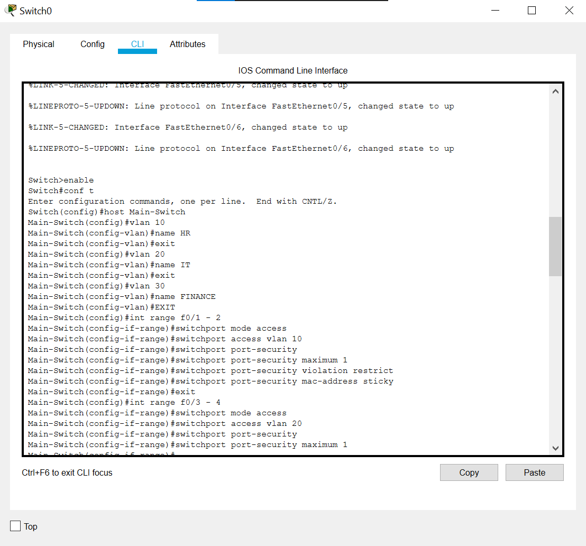
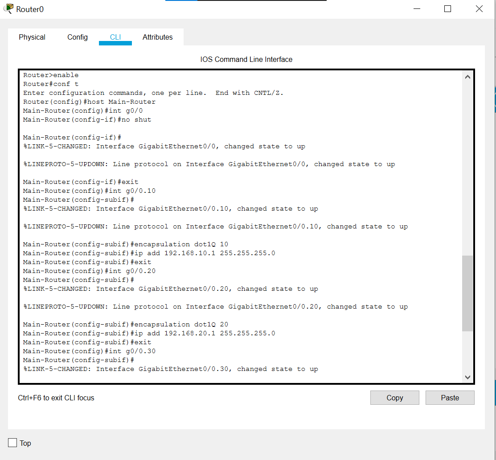
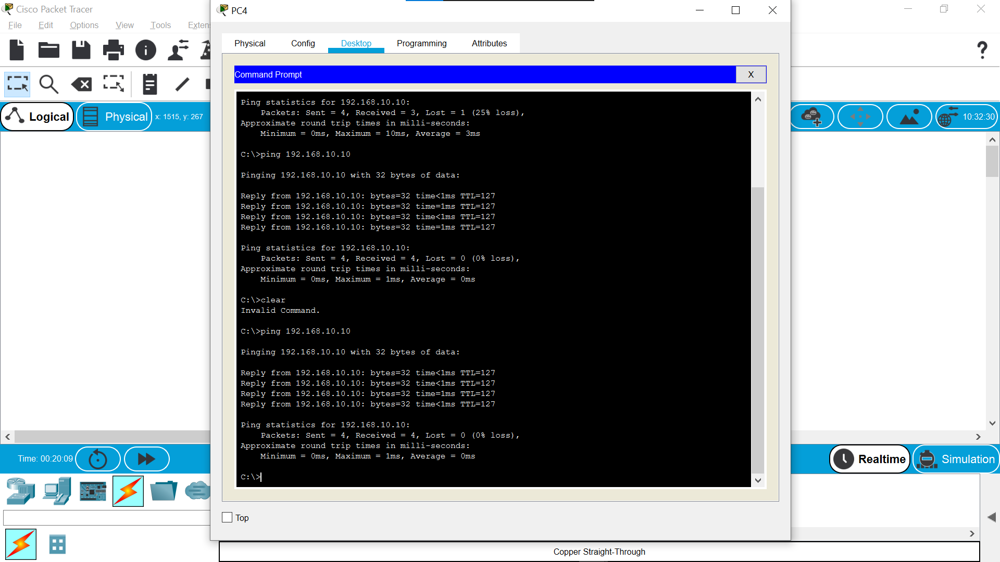

Project Overview
Objective
Design and implement a segmented network using VLANs with inter-VLAN routing to demonstrate network isolation and controlled communication between different departments.
Network Architecture
- 3 VLANs: HR (VLAN 10), IT (VLAN 20), Finance (VLAN 30)
- Router-on-a-Stick: Single router with subinterfaces
- Layer 2 Switch: VLAN configuration and port assignments
- 5 End Devices: PCs distributed across VLANs
Technologies Used
- Cisco Packet Tracer
- Cisco IOS Commands
- VLAN Trunking Protocol
- Subinterface Configuration
- IP Subnetting
Network Topology

Network Segments
HR Department
VLAN 10
192.168.10.0/24
Devices: PC0, PC1
IT Department
VLAN 20
192.168.20.0/24
Devices: PC2, PC3
Finance Department
VLAN 30
192.168.30.0/24
Devices: PC4, PC5
Device Configuration
Switch0 Configuration

Key Configuration Steps:
- VLAN Creation: Created VLANs 10 (HR), 20 (IT), and 30 (Finance)
- Port Assignment: Assigned access ports to respective VLANs
- Trunk Configuration: Configured trunk port to router for inter-VLAN routing
- Port Security: Implemented port security features for enhanced network security
Router0 Configuration

Router-on-a-Stick Setup:
- Subinterfaces: Created subinterfaces for each VLAN (G0/0.10, G0/0.20, G0/0.30)
- Encapsulation: Configured 802.1Q encapsulation for VLAN tagging
- IP Addressing: Assigned gateway IPs for each VLAN subnet
- Routing: Enabled IP routing for inter-VLAN communication
Testing & Validation

Successful ping tests demonstrating inter-VLAN connectivity
Validation Results
Intra-VLAN Communication: ✓ Successful
Inter-VLAN Routing: ✓ Functional
VLAN Isolation: ✓ Verified
Network Connectivity: ✓ All devices reachable
Test Scenarios Performed:
- Ping between devices in same VLAN
- Ping between devices in different VLANs
- Verification of VLAN assignments
- Trunk port functionality validation
- Router subinterface status verification